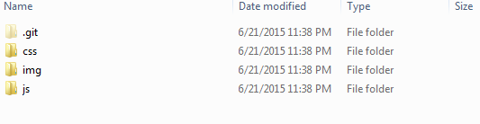
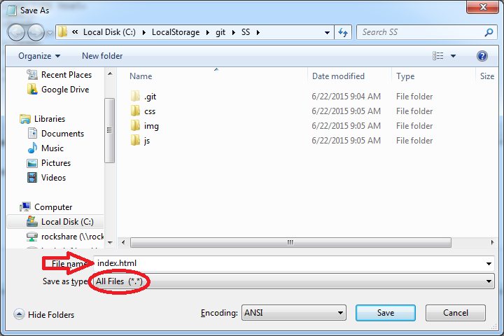

In this first section, we take a look at building basic web pages using simple text editing software - the kind of software that comes standard with most personal computers.
Create a new repository on Github, then clone it locally. We will consider this our web server.
Next, create three folders in the repository: css, img, js
Start Menu > Accessories > Notepad
Open Notepad and enter this text. This is the beginning of a basic HTML document.
<!DOCTYPE html>
<html>
<head>
<title></title>
</head>
<body>
</body>
</html>
File > Save As... > index.html
Web servers are configured to serve index.html as the default home page.
Name the file index.html and set the Save as type to All Files
Next, head over to the Mozilla Developer Network and take a look at some HTML tags.
MDN: HTML Intro MDN: HTML Element Reference